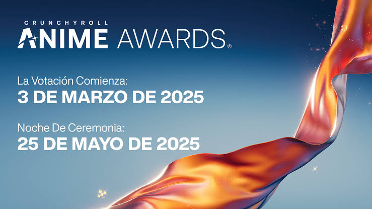

Se anuncian los nuevos Nippon Anime Awards
Noviembre de 2026
Se anunció la creación de los Nippon Anime Awards, unos nuevos premios relacionados con la industria de la animación japonesa.
Su primer evento está previsto para el 21 de noviembre de 2027.